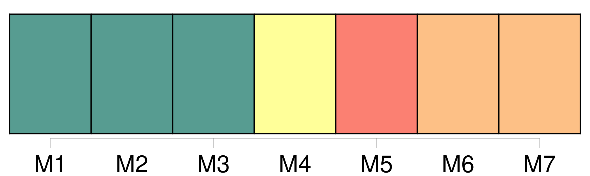

Longueur nb maillons : 7 mentions |
 |
Dans les cas où l'absent n'aurait point laissé de procuration pour l'administration de ses biens, ses héritiers présomptifs au jour de sa disparition ou de ses dernières nouvelles, pourront, en vertu du jugement définitif qui aura déclaré l'absence, se faire envoyer en [possession provisoire des biens] qui appartenaient à l'absent au jour de son départ ou de ses dernières nouvelles, à la charge de donner caution pour la sûreté de leur administration. [1 phrases]
Si l'absent a laissé une procuration ses héritiers présomptifs ne pourront poursuivre la déclaration d'absence et l'envoi en [possession provisoire] qu'après dix années révolues depuis sa disparition ou depuis ses dernières nouvelles. [3 phrases]
Lorsque les héritiers présomptifs auront obtenu l'envoi en [possession provisoire] , le testament, s'il en existe un, sera ouvert à la réquisition des parties intéressées, ou du commissaire du Gouvernement près le tribunal ; et les légataires, les donataires, ainsi que tous ceux qui avaient sur les biens de l'absent, des droits subordonnés à la condition de son décès, pourront les exercer provisoirement, à la charge de donner caution. [5 phrases]
[La possession provisoire] ne sera qu' [un dépôt] , [qui] donnera à ceux qui [l'] obtiendront l'administration des biens de l'absent, et qui les rendra comptables envers lui, en cas qu'il reparaisse ou qu'on ait de ses nouvelles. |
|
Il est possible de télécharger la ressource sur la page Ortolang |
Si vous avez des questions ou vous voyez des erreurs, merci d'envoyer un mail à silvia.federzoni89@gmail.com |